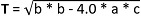

Solving A Quadratic Equation... with Complex Numbers
Fall 2018: Question 38 (use C language to make this program)
Fall 2018: Question 8 (use Python to make this program)
Fall 2017: Question 8 (use C language to make this program)
Calculate the roots (real or imaginary) of the quadratic equation Ax2 + Bx + C = 0.
If done in C, you have to use #include<math.h> to write this program.
Input instruction: three numbers (all int): A, B, and C
Output instructions:
- To find the determinant: 
- First root (in double): x1 = ((-b) + sqrt(b * b - 4 * a * c)) / (2 * a)
Second root (in double): x2 = ((-b) - sqrt(b * b - 4 * a * c)) / (2 * a) - If T >= 0, then display x1 and x2 as real roots in ONE decimal place.
- If T < 0, then display x1 and x2 as imaginary roots in ONE decimal place.
printf("%.1f+%.1fi\n",x11, x12);
printf("%.1f-%.1fi",x21, x22); - If the value of x11 or x21 (as shown in the code above) is 0, then you do not need to display if the number is positive or negative.
x11 and x21 = ((-b) + T) / (2.0 * a)
| Sample Input | Expected Output |
|---|---|
|
1 -2 1 |
1.0 1.0 |
|
1 2 2 |
-1.0+1.0i -1.0-1.0i |